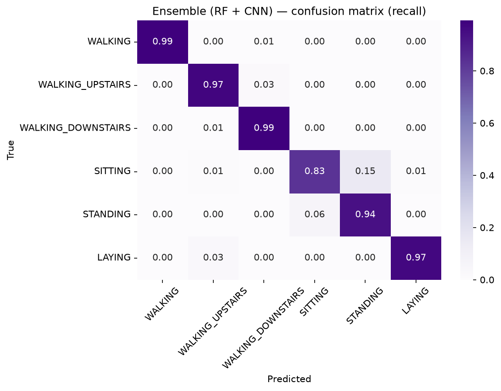

Classifying physical activities from wearable IMU signals across two datasets — with an emphasis on honest, subject-independent evaluation over headline accuracy.
UCI HAR test set (9 held-out subjects). Every fancier model must justify itself against the Random Forest baseline on hand-crafted features.
Ensemble (RF + CNN) is best; the LSTM is the weakest deep model.
RF is a posture specialist, the CNN a motion specialist — complementary.
A single train/test split can mislead. Leave-One-Subject-Out cross-validation and significance testing reveal that the models are statistically tied — and that per-subject variance is the real challenge.
A "significant" fixed-split result dissolves into a tie under subject-level CV.
| Comparison | Test | p-value | Verdict |
|---|---|---|---|
| CNN vs RF (fixed split) | McNemar | 0.0002 | CNN > RF |
| CNN vs RF (all 30 subjects) | Wilcoxon LOSO | 0.60 | tie |
| CNN vs LSTM (all 30 subjects) | Wilcoxon LOSO | 0.0045 | CNN > LSTM |
| Model | LOSO accuracy | Worst subj. |
|---|---|---|
| CNN | 0.940 ± 0.076 | 0.73 |
| Random Forest | 0.936 ± 0.057 | 0.79 |
| LSTM | 0.910 ± 0.093 | 0.66 |
Leave-One-Subject-Out on a harder dataset: ~0.81 for typical people, but subject 108 collapses.
A hypothesis from the UCI HAR error analysis, tested on PAMAP2: windows that straddle an activity transition carry no coherent single-activity signal.
Same model, PAMAP2 test subjects: clean vs boundary windows (12-class chance ≈ 0.083).
Block-diagonal: motion vs static never confused; SITTING↔STANDING is the sole soft spot.

The CNN fixed the baseline's worst class (downstairs recall 0.86 → 0.97) while the RF kept static postures cleaner. Their ensemble beats either alone.
A McNemar-significant CNN>RF result (p=0.0002) became a statistical tie under Leave-One-Subject-Out (Wilcoxon p=0.60). Only subject-level CV is trustworthy.
On PAMAP2, most subjects reach ~0.81 but one collapses to 0.30 — a domain shift a care system could not tolerate. Aggregate accuracy hides it.
Boundary-straddling windows score 0.075 (≈ chance) vs 0.837 for clean windows — mechanistically confirming the transition hypothesis across datasets.
Sitting vs standing are two motionless upright postures with near-identical gravity signatures — no model exceeds ~0.89 recall; the information isn't in the signal.
RF tuning gained nothing (within CV noise); CNN tuning gained ~1 point via regularization. Neural nets are far more tuning-sensitive than forests.